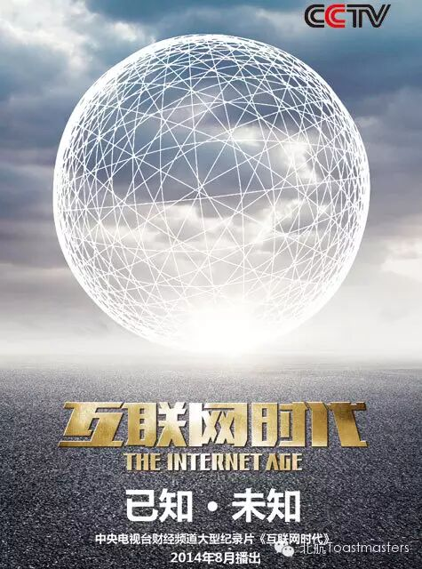
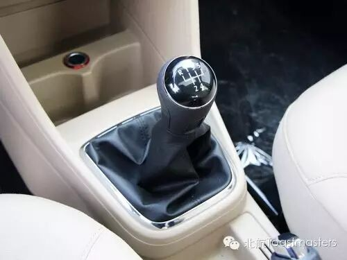

Internet Age
TM:Bowen
TTM:MaunaLoa
The Internet, which was invented in the 20th century, develops rapidly in the 21st century. With the development of the Internet, more and more advantages and disadvantages begin to emerge. Now, we nearly cannot live without the internet. What’s your opinion about the Internet Age? What interesting questions will be asked by our Table Topic Master? Welcome everybody to enjoy this theme in our meeting’s Table Topic session.
The Way I Went
Beihang Toastmasters get a new doctoral canditate whose name is Andy. He is an earnest and reliable man, and he prepared much before stepping on ourstage. Let's wait and see how he will present himself as an ice breaker.

My Driving License
Every man dreams to have a car and to be a racer in film "Fast and Furious", but it requires driving license at first. And stories and trouble would happens to you when you learning driving. Summers has some different driving experience. Let him tell you.
I Have A Plan
Future is unpredictable so that people try to make plans to control it. Too many great plans in the history changed the world and brought us a new life. Here, our Kiki has got agreat plan to share with you, maybe it will change you and me.
Toastmasters International (TI) is a nonprofit educational organization that operates clubs worldwide for the purpose of helping members improve their communication, public speaking, and leadership skills.
https://mp.weixin.qq.com/s/j59iuxF_MroFUuUExW2nyQ
本页为抢救式本地归档，图文已永久保存。